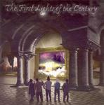

| Artist: | Chaneton |
| Title: | The First Lights Of The Century |
| Label: | self produced CH2 |
| Length(s): | minutes |
| Year(s) of release: | 2004 |
| Month of review: | [05/2005] |
| 1) | First Lights Of The Century | 9.18 |
| 2) | Faces Melting In Your Hands | 6.20 |
| 3) | Infinite Line | 6.35 |
| 4) | Across The Sea | 8.33 |
| 5) | Black Mountain | 8.52 |
| 6) | Six Flowers In The Room | 3.57 |
| 7) | On The Edge | 4.53 |
| 8) | The Man In Grey | 6.02 |
| 9) | Apocalypse Seller | 7.23 |
| 10) | Lost Prophecy | 12.55 |
Faces Melting In Your Hands continues the full-blown symphonic rock feel with thundering keyboards, and a rather chaotic ending in which many things intertwine and combine. I also get a bit of a Landmarq feel here, but only instrumentally.
Infinite Line shows that the vocalist has a bit of that tear of Gabriel in his voice. However, the vocal melody he has at his disposal is all too usual. And this song is mostly built around this vocal melody, there is not much else. On the whole an unsatisfying song then simply lacks appeal, and we have heard it all before. The final part compensates quite a bit, but still, the music is awfully full of cliche's. Think of Marillion inspired bands here, such as Darius.
Across The Sea continues the style of the first two tracks mainly, with the vocalist singing at the top of his voice, full of emotion. Relief (not meant sarcastically) comes in the middle part in which the music dies down for the most part. Soon after the keyboardist starts a meandering solo which owes some to ELP. Beneath the guitar plays a repetitive riff all the time, making for a very layered sound which again reminds me of Landmarq, albeit that it all sounds a bit 'older'. It does mean that compositionally the band has everything in order. The vocals at the end sound a bit 'far away' and call Genesis to mind.
On Black Mountain the band stays true to form: the vocals evoke Gabriel, or in actual fact singers of Italian prog bands that evoke Gabriel, while the music is a more symphonic version of Marillion. Six Flowers In The Room opens melodically, with piano and a sensitive melody. The melodic material on this ballad in really quite strong. I still think the vocals could be better, why could they not sing in Spanish?
On The Edge has catchy neo-prog to open with. The vocals, slightly in the back, are lined with organ. I have heard much of this before, but as always, Chaneton manages to find an ingredient to give it all a twist that makes forgiveable. The Man In Grey means a return to the days of The Lamb, except that the guitarsound is more atmospheric, and there is a nice synthetic string section towards the end. In fact, this section reminds me more of Script-era Marillion, especially when the vocalist's voice goes up. The guitar solo starts melodic, and becomes more rowdy toward the end.
Apocalypse Seller opens with pacey keyboard runs. The subtitle is In The Pope's Hands, which is quite apt with the recent death of John Paul II. This is more of a track in we have plenty of variation to last its just over seven minutes. The band in those minutes goes through all of the usual moves including Mark Kelly style keyboard solo's, and a Hackettish guitar solo towards the end.
Lost Prophecy is the epic tune of this album, slightly under thirteen minutes. There is a dark rumbling feel to much of this track, which imbues a rather darkish atmosphere. The guitars are also very low-key. This is in fact a very nice change from the rather easy-go-lucky-prog of earlier on. In the middle we have peaceful acoustic guitar (not much of that on this record), after which we move to a similarly peaceful piano cum vocals passage. The last third of the track has excellent symphonic guitar lines. The backing vocals need a bit more attention next time (timing guys). An excellent conclusion, especially since the band is really into atmospheres on this one, without giving up too much of their style.